منذ الرضى الذي أظهرته مريم بالإيمان، في يوم البشارة، و الذي احتفظت به على ثباته قرب الصليب، تمتد أمومتها إلى أخوة ابنها و أخواته “الذين لم ينته شوطهم بعد، و إنما يعانون وطأة المشاق و المحن”. إن يسوع، الوسيط الوحيد، هو طريق صلاتنا. و مريم، أمه و أمنا، هي شفافة أمامه: إنها “تدل على الطريق” (الهادية أو المرشدة)، إنها “آتية”، بحسب رسم الايقونات التقليدي في الشرق و الغرب. (كتاب التعليم المسيحي للكنيسة الكاثوليكية، فقرة 2674)
مريم هي المصلية الكاملة رمز الكنيسة. و عندما نصلي إليها، نعتنق معها قصد الأب الذي يرسل ابنه ليخلص جميع البشر. و كالتلميذ الحبيب، نقبل عندنا أم يسوع التي صارت أم جميع الأحياء. فنستطيع أن نصلي معها و إليها. و صلاة الكنيسة كأنها محمولة بصلاة مريم. و هي تتحد بها في الرجاء. (كتاب التعليم المسيحي للكنيسة الكاثوليكية، فقرة 2679)
أسرار الفرح:
ليومي الإثنين والسبت، ومن زمن المجيء إلى أحد الكهنة
- البشارة: التواضع
٢٦وفي الشَّهرِ السَّادِس، أَرسَلَ اللهُ المَلاكَ جِبرائيلَ إِلى مَدينَةٍ في الجَليلِ ٱسْمُها النَّاصِرَة، ٢٧إِلى عَذْراءَ مَخْطوبَةٍ لِرَجُلٍ مِن بَيتِ داودَ ٱسمُه يوسُف، وَٱسمُ العَذْراءِ مَريَم. ٢٨فدَخَلَ إِلَيها فَقال: «إِفرَحي، أَيَّتُها المُمتَلِئَةُ نِعْمَةً، الرَّبُّ مَعَكِ». (لوقا 1: 26-38)
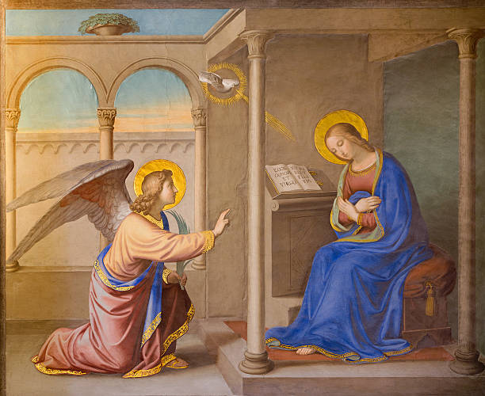
الزيارة: محبة القريب
وفي تلكَ الأَيَّام قامَت مَريمُ فمَضَت مُسرِعَةً إِلى الجَبَل إِلى مَدينةٍ في يَهوذا. ٤٠ودَخَلَت بَيتَ زَكَرِيَّا، فَسَلَّمَت على أَليصابات. ٤١فلَمَّا سَمِعَت أَليصاباتُ سَلامَ مَريَم، اِرتَكَضَ الجَنينُ في بَطنِها، وَٱمتَلأَت مِنَ الرُّوحِ القُدُس، ٤٢فَهَتَفَت بِأَعلى صَوتِها: «مُبارَكَةٌ أَنتِ في النِّساء! وَمُبارَكَةٌ ثَمَرَةُ بَطنِكِ! (لوقا 1: 39-42)
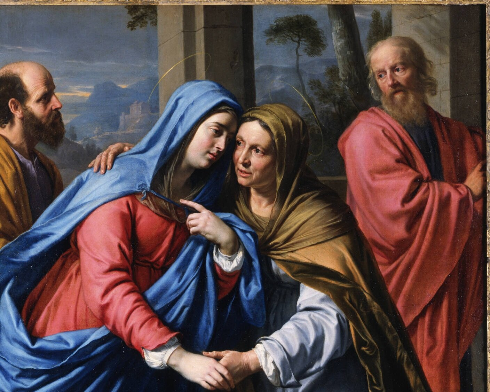
الميلاد: التجرد
١وفي تِلكَ الأَيَّام، صَدَرَ أَمرٌ عنِ القَيصَرِ أَوغُسطُس بِإِحْصاءِ جَميعِ أَهلِ المَعمور. ٢وجَرى هٰذا الإِحصاءُ الأَوَّلُ إِذ كانَ قيرينِيوس حاكمَ سورية. ٣فذَهبَ جَميعُ النَّاسِ لِيَكتَتِبَ كُلُّ واحِدٍ في مَدينَتِه. ٤وصَعِدَ يوسُفُ أَيضًا مِن الجَليل مِن مَدينَةِ النَّاصِرَة إِلى اليَهودِيَّةِ إِلى مَدينَةِ داودَ الَّتي يُقالُ لَها بَيتَ لَحم، فقَد كانَ مِن بَيتِ داودَ وعَشيرتِه، ٥لِيَكتَتِبَ هو ومَريمُ خَطيبَتُه وكانَت حامِلًا. ٦وبَينا هما فيها حانَ وَقتُ وِلادَتِها، ٧فولَدَتِ ٱبنَها البِكرَ، فَقَمَّطَته وأَضجَعَته في مِذوَدٍ لأَنَّه لم يَكُنْ لَهُما مَوضِعٌ في المَضافة. (لوقا 2: 1-7)
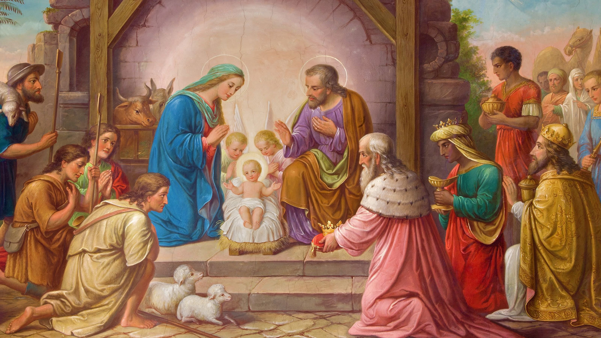
تقدمة يسوع إلى الهيكل: الطهارة
(لوقا 2: 21-24) ٢١ولَمَّا ٱنقَضَت ثَمانِيَةُ أَيَّامٍ فحانَ لِلطِّفْلِ أَن يُختَن، سُمِّيَ يسوع، كما سَمَّاهُ المَلاكُ قَبلَ أَن يُحبَلَ بِه ٢٢ولَمَّا حانَ يَومُ طُهورِهما بِحَسَبِ شَريعَةِ موسى، صَعِدوا به إِلى أُورَشَليم لِيُقَدِّماه لِلرَّبّ، ٢٣كما كُتِبَ في شَريعةِ الرَّبِّ مِن أَنَّ كُلَّ بِكرٍ ذَكَرٍ يُنذَرُ لِلرَّبّ، ٢٤ولِيُقَرِّبا كما وَرَدَ في شَريعَةِ الرَّبّ: زَوْجَيْ يَمَامٍ أَو فَرخَيْ حَمام.
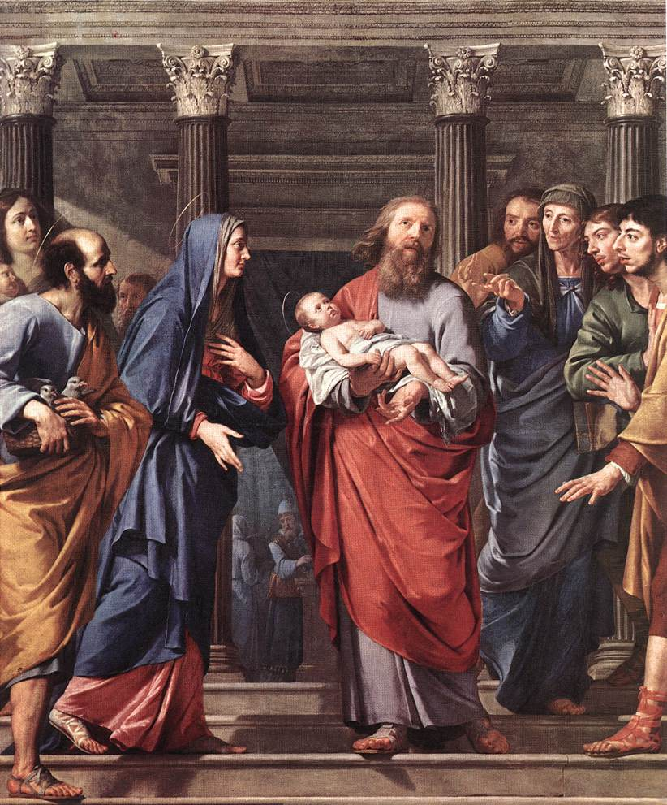
وجود يسوع في الهيكل: الطاعة
(لوقا 2: 41-49) ٤١وكانَ أَبَواهُ يَذهَبانِ كُلَّ سَنَةٍ إِلى أُورَشَليمَ في عيدِ الفِصْح. ٤٢فلَمَّا بَلَغَ ٱثنَتَيْ عَشْرَةَ سَنَة، صَعِدوا إِلَيها جَرْيًا على السُّنَّةِ في العيد. ٤٣فَلَمَّا ٱنقَضَت أَيَّامُ العيدِ ورَجَعا، بَقِيَ الصَّبِيُّ يسوعُ في أُورَشَليم، مِن غَيرِ أَن يَعلَمَ أَبَواه. ٤٤وكانا يَظُنَّانِ أَنَّه في القافِلة، فَسارا مَسيرَةَ يَومٍ، ثُمَّ أَخذا يَبحَثانِ عَنهُ عِندَ الأَقارِبِ والمَعارِف. ٤٥فلَمَّا لَم يَجداه، رَجَعا إِلى أُورَشَليمَ يَبحَثانِ عنه. ٤٦فوَجداهُ بَعدَ ثَلاثَةِ أَيَّامٍ في الهَيكَل، جالِسًا بَينَ العُلَماء، يَستَمِعُ إِلَيهم ويسأَلُهم. ٤٧وكانَ جَميعُ سامِعيهِ مُعجَبينَ أَشَدَّ الإِعجابِ بِذَكائِه وجَواباتِه.
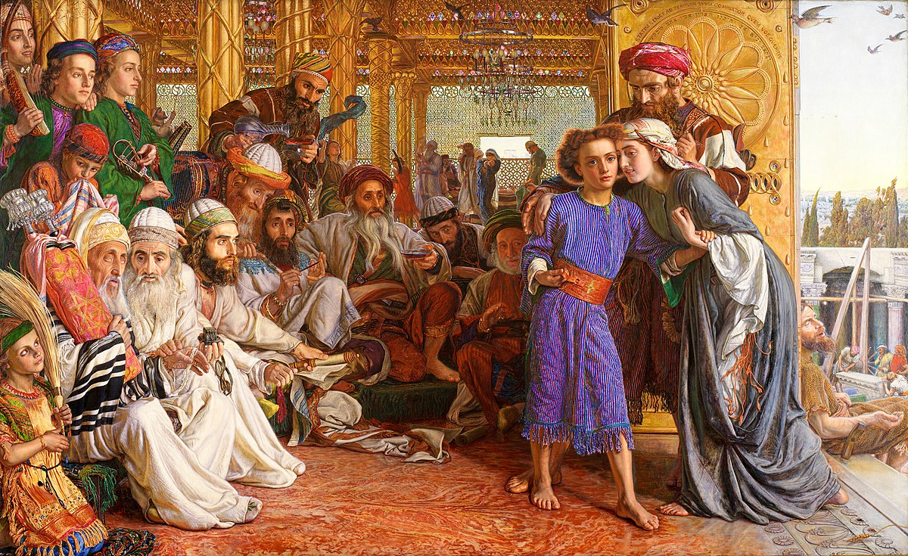
أسرار النور:
ليوم الخميس
المعمودية: البنوة للآب
(متى 3: 16-17) ١٦وٱعتَمَدَ يسوع وخَرَجَ لِوَقتِه مِنَ الماء، فإِذا السَّمَواتُ قدِ ٱنفَتَحت فرأَى رُوحَ اللهِ يَهبِطُ كأَنَّه حَمامةٌ ويَنزِلُ علَيه. ١٧وإِذا صَوتٌ مِنَ السَّمَواتِ يَقول: «هٰذا هُوَ ٱبنِيَ الحَبيبُ الَّذي عَنه رَضِيت».

عرس قانا الجليل: التجدد بالروح القدس
(يوحنا 2: 1-5) 1 وفي اليَومِ الثَّالِث، كانَ في قانا الجَليلِ عُرسٌ وكانَت أُمُّ يَسوعَ هُناك. ٢فدُعِيَ يسوعُ أَيضًا وتلاميذُه إِلى العُرس. ٣ونَفَدَتِ الخَمْر، فقالَت لِيَسوعَ أُمُّه: «لَيسَ عِندَهم خَمْر». ٤فقالَ لها يسوع: «ما لي وما لكِ، أَيَّتُها المَرأَة؟ لَم تَأتِ ساعتي بَعْد». ٥فقالَت أُمُّه لِلخَدَم: «مَهما قالَ لَكم فٱفعَلوه».
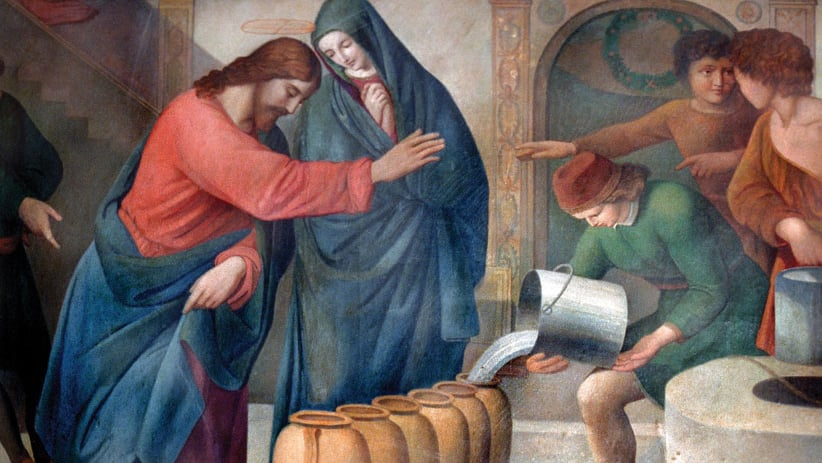
إعلان مجئ الملكوت: التوق إلى الملكوت
«حانَ الوَقتُ وَٱقْتَرَبَ مَلَكوتُ الله. فَتوبوا وآمِنوا بِالبِشارة» (مرقس 1: 15)
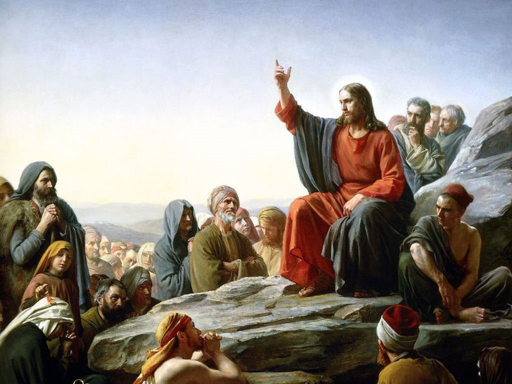
التجلي: اتباع تعاليم يسوع
١وبَعدَ سِتَّةِ أَيَّام مَضى يسوعُ بِبُطرسَ ويَعقوبَ وأَخيه يوحَنَّا، فٱنفَردَ بِهِم عَلى جَبَلٍ عالٍ، ٢وتَجَلَّى بِمَرأًى مِنهُم، فأَشَعَّ وَجهُه كالشَّمس، وتَلألأَت ثِيابُه كالنُّور. (متى 17: 1-2)

العشاء السري: المشاركة في الذبيحة الإلهية.
وبَينَما هم يَأكُلون، أَخذَ يسوعُ خُبزًا وبارَكَ ثُمَّ كَسَرَه وناوَلَه تلاميذَه وقال: «خُذوا فَكُلوا، هٰذا هُوَ جَسَدي». (متى 26: 26)

أسرار الحزن:
ليومي الثلاثاء والجمعة، ومن أحد الكهنة إلى أحد القيامة
صلاة يسوع في البستان: الندامة
ثُمَّ جاءَ يسوعُ معَهم إِلى ضَيعَةٍ يُقالُ لها جَتسَمانِيَّة، فقالَ لِلتَّلاميذ: «أُمكُثوا هُنا، رَيثَما أَمضي وأُصَلِّي هُناك». ٣٧ومضى ببُطرسَ وَٱبنَيْ زَبَدى، وجَعَل يَشعُرُ بالحُزْنِ والكآبة. ٣٨فقالَ لَهم: «نَفسي حَزينَةٌ حتَّى المَوْت. أُمكُثوا هُنا وٱسهَروا مَعي». ٣٩ثُمَّ أَبعَدَ قَليلًا وسَقَطَ على وَجهِهِ يُصَلِّي فيقول: «يا أَبتِ، إِن أَمكَنَ الأَمْرُ، فَلتَبتَعِدْ عَنِّي هٰذِهِ الكَأس، ولٰكن لا كما أَنا أَشاء، بَل كما أَنتَ تَشاء!» (متى 26: 36-39)
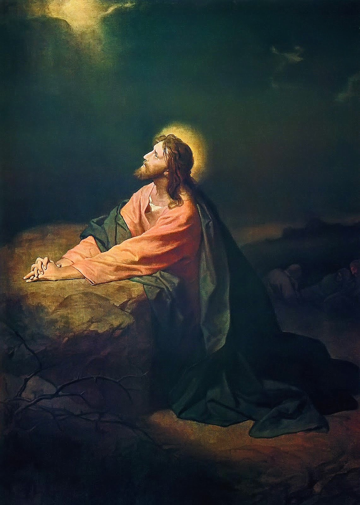
الجلد: إماتة الحواس
فأَطلَقَ لَهم بَرْأَبَّا، أَمَّا يسوع فجَلَدَه، ثُمَّ أَسلَمَه لِيُصلَب. (متى 27: 26)
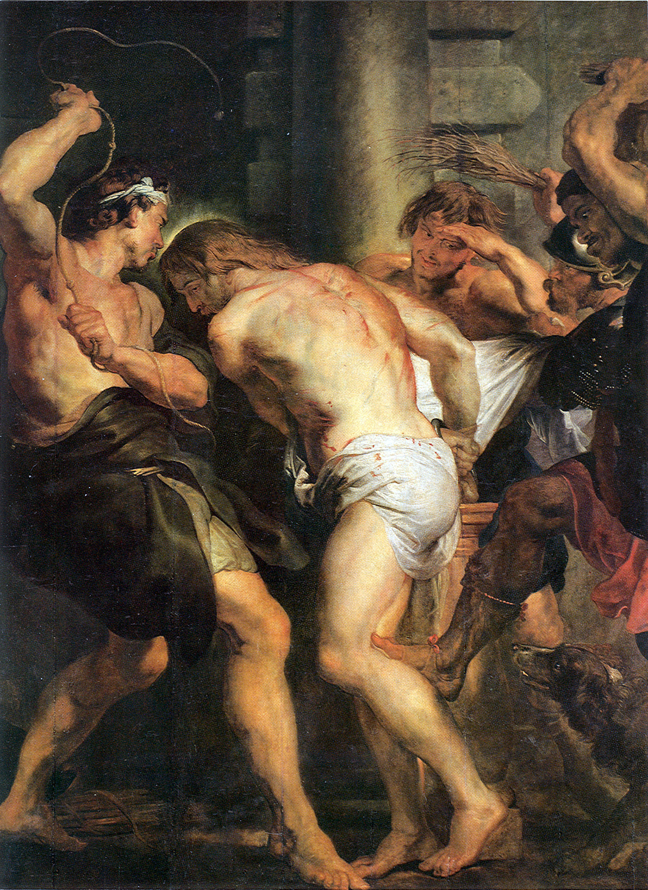
إكليل الشوك: احتقار المجد العالمي
فمَضى جُنودُ الحاكِمِ بِيَسوعَ إِلى دارِ الحاكِم وجَمَعوا علَيه الكَتيبَةَ كُلَّها، ٢٨فجَرَّدوهُ مِن ثِيابِه وجَعَلوا علَيه رِداءً قِرمِزِيًّا، ٢٩وضَفَروا إِكليلًا مِن شَوكٍ ووَضَعوه على رأسِه، وجَعلوا في يَمينِه قَصَبَة، ثُمَّ جَثَوا أَمامَه وسخِروا مِنهُ فقالوا: «السَّلامُ عليكَ يا مَلِكَ اليَهود».
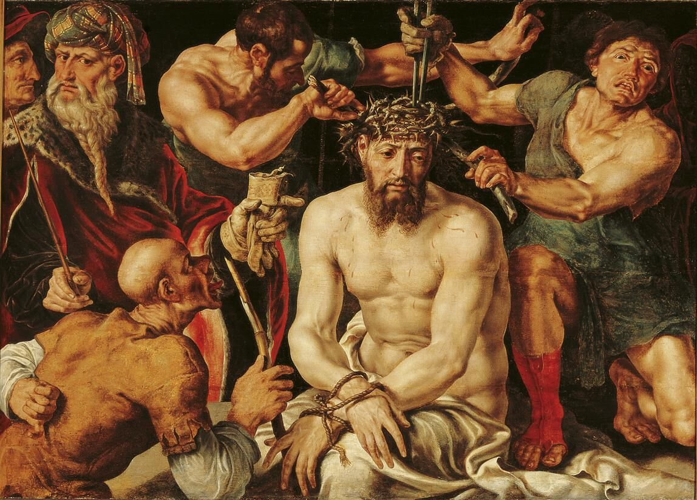
يسوع يحمل صليبه: الصبر و التسليم
وسَخَّروا لِحَمْلِ صَليبِه أَحدَ المارَّةِ سِمْعانَ القيرينيّ أَبا الإِسكَندَرِ وَروفُس، وكانَ آتِيًا مِنَ الرِّيف. ٢٢وساروا بِه إِلى المَكانِ المَعروفِ بِالجُلْجُثة، أَي مَكانِ الجُمْجُمَة.(مرقس: 21-22)
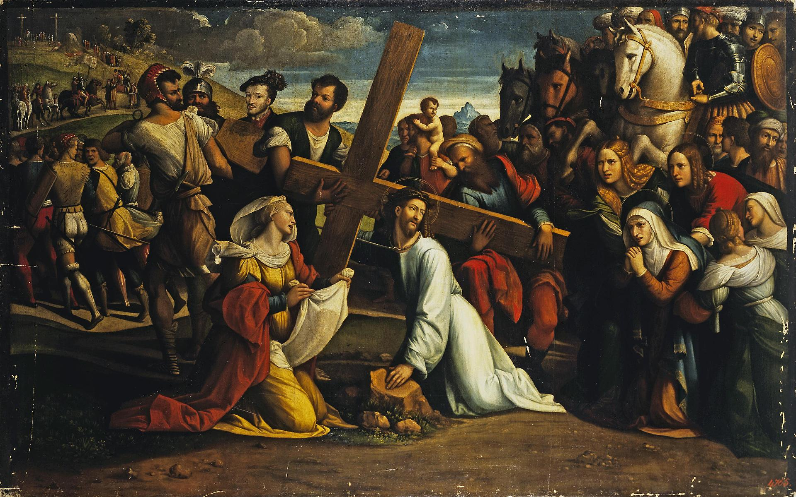
الموت على الصليب: المحبة و المغفرة للأعداء
ولمَّا وَصَلوا إِلى المَكانِ المَعروفِ بالجُمجُمة، صَلَبوهُ فيهِ والمُجرِمَيْن، أَحَدُهما عنِ اليَمينِ والآخَرُ عَنِ الشِّمال. ٣٤فقالَ يسوع: «يا أَبَتِ ٱغفِرْ لَهم، لِأَنَّهُم لا يَعلَمونَ ما يَفعَلون». ثُمَّ ٱقتَسموا ثِيابَه مُقتَرِعينَ علَيها. ٣٥ووقَفَ الشَّعْبُ هُناكَ يَنظُر، والرُّؤَساءُ يَهزَأُونَ فيقولون: «خَلَّصَ غَيرَهُ فَلْيُخَلِّصْ نَفْسَه، إِن كانَ مَسيحَ اللهِ المُختار!» ٣٦وسَخِرَ مِنه الجُنودُ أَيضًا، فدَنَوا وقرَّبوا إِلَيه خَلًّا وقالوا: ٣٧«إِن كُنتَ مَلِكَ اليَهود فخَلِّصْ نَفْسَكَ!» ٣٨وكانَ أَيضًا فَوقَه كِتابَةٌ خُطَّ فيها: «هٰذا مَلِكُ اليَهود». ٣٩وأَخَذَ أَحَدُ المُجرِمَينِ المُعَلَّقَينِ على الصَّليبِ يَشتُمُه فيَقول: «أَلستَ المَسيح؟ فخَلِّصْ نَفْسَكَ وخَلِّصْنا!» ٤٠فٱنتَهَرَه الآخَرُ قال: «أَوَما تَخافُ الله وأَنتَ تُعاني العِقابَ نَفْسَه! ٤١أَمَّا نَحنُ فعِقابُنا عَدْل، لِأَنَّنا نَلْقى ما تَستَوجِبُه أَعْمالُنا. أَمَّا هو فلَم يَعمَلْ سُوءًا». ٤٢ثُمَّ قال: «أُذكُرْني يا يسوع إِذا ما جئتَ في مَلَكوتِكَ». ٤٣فقالَ لَه: «الحَقَّ أَقولُ لَكَ: ستَكونُ اليَومَ مَعي في الفِردَوس». ٤٤وكانَتِ السَّاعَةُ نَحوَ الظُّهر، فخَيَّمَ الظَّلامُ على الأَرضِ كُلِّها حتَّى الثَّالِثَة، ٤٥لِأَنَّ الشَّمسَ قدِ ٱحتَجَبَت. وٱنشَقَّ حِجابُ المَقدِسِ مِنَ الوَسَط. ٤٦فصاحَ يسوعُ بِأَعلى صَوتِه قال: «يا أَبَتِ، في يَدَيكَ أَجعَلُ رُوحي!» قالَ هٰذا ولَفَظَ الرُّوح.
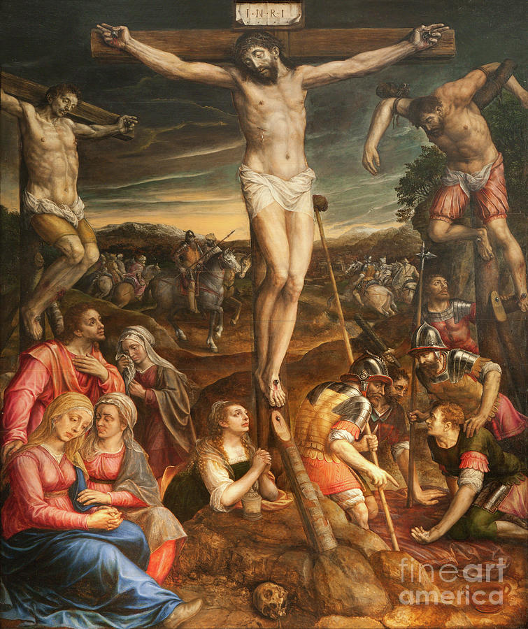
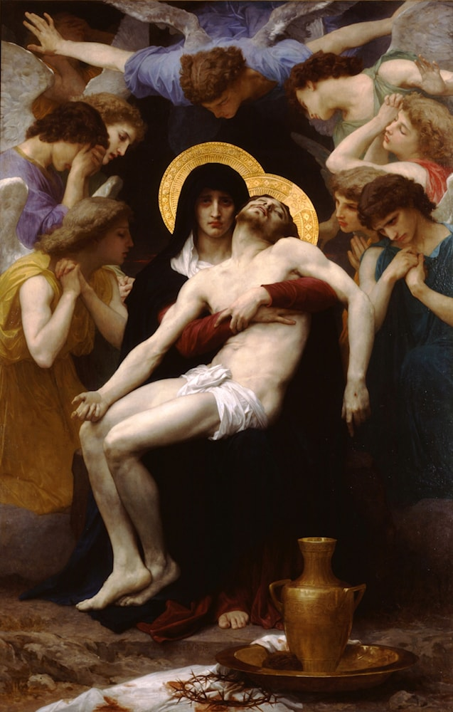
أسرار المجد:
ليومي الأحد والأربعاء، ومن أحد القيامة إلى العنصرة
القيامة: النهوض من الخطية
وعِندَ فَجرِ يَومِ الأَحَد جِئنَ إِلى القَبْر، وهُنَّ يَحمِلنَ الطِّيبَ الَّذي أَعدَدنَه. ٢فوَجَدنَ الحَجَرَ قد دُحرِجَ عنِ القَبْر. ٣فدَخَلنَ فلَم يَجِدنَ جُثْمانَ الرَّبِّ يسوع. ٤وبَينَما هُنَّ في حَيرَةٍ مِن ذٰلك، إِذ حَضَرَهُنَّ رَجُلانِ علَيهِما ثِيابٌ بَرَّاقَة، ٥فخِفْنَ ونَكَسْنَ وُجوهَهُنَّ نَحوَ الأَرض، فقالا لَهُنَّ: «لِماذا تَبحَثنَ عنِ الحَيِّ بَينَ الأَموات؟ (لوقا 24: 1-5)

الصعود: الشوق إلى السماء
١٩وبَعدَ ما كَلَّمَهُمُ الرَّبُّ يسوع، رُفِعَ إِلى السَّماء، وجَلَسَ عَن يَمينِ الله. (مرقس 16: 19)
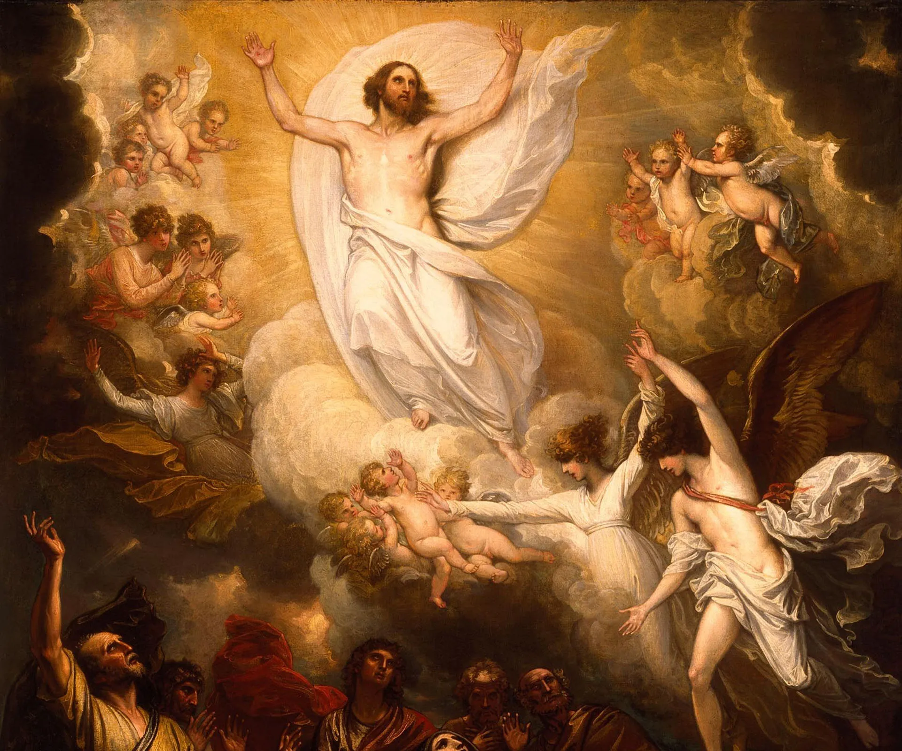
حلول الروح القدس: الإصغاء لإلهامات الروح القدس
لَمَّا أَتى اليَومُ الخَمْسون، كانوا مُجتَمِعينَ كُلُّهم في مَكانٍ واحِد، ٢فٱنْطَلَقَ مِنَ السَّماءِ بَغتَةً دَوِيٌّ كَريحٍ عاصِفَة، فمَلأَ جَوانِبَ البَيتِ الَّذي كانوا فيه، ٣وظَهَرَت لَهم أَلسِنَةٌ كأَنَّها مِن نارٍ قدِ ٱنقَسَمَت فوقَفَ على كُلٍّ مِنهُم لِسان، ٤فٱمتَلأُوا جَميعًا مِنَ الرُّوحِ القُدس، وأَخذوا يتكلَّمونَ بِلُغاتٍ غَيرِ لُغَتِهِم، على ما وَهَبَ لهُمُ الرُّوحُ القُدُسُ أَن يَتَكَلَّموا. (أعمال الرسل 2: 1-5)
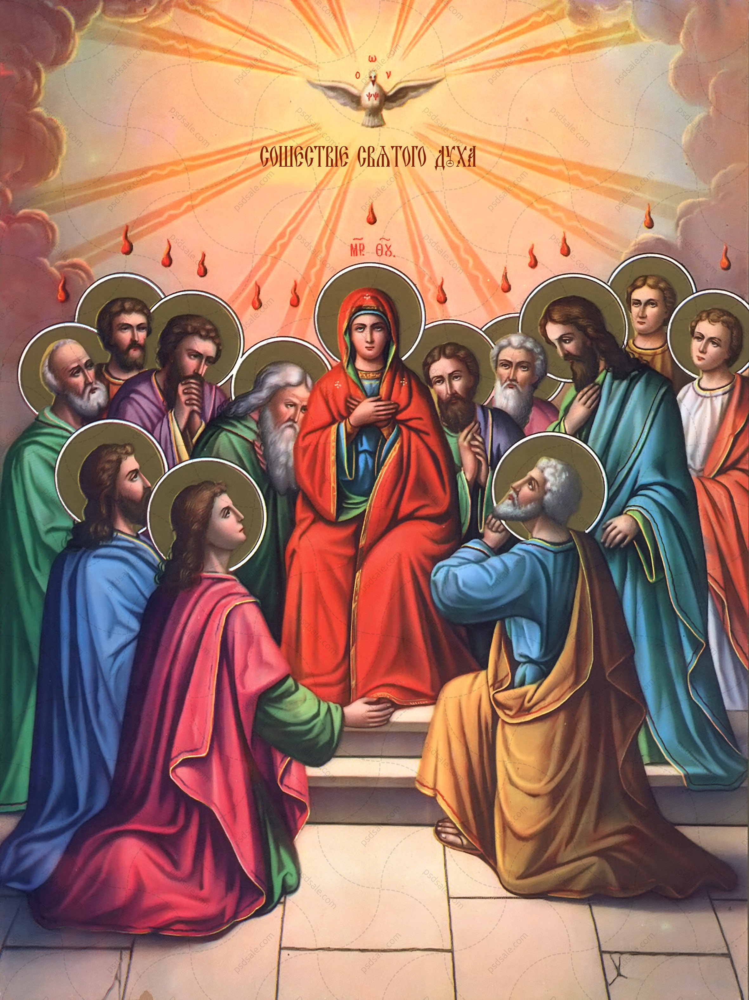
الانتقال: الميتة الصالحة
سَوفَ تُهَنِّئُني بَعدَ اليَومِ جَميعُ الأَجيال، لِأَنَّ القَديرَ صَنَعَ إِلَيَّ أُمورًا عَظيمة: قُدُّوسٌ ٱسمُه (لوقا 1: 48: 49)
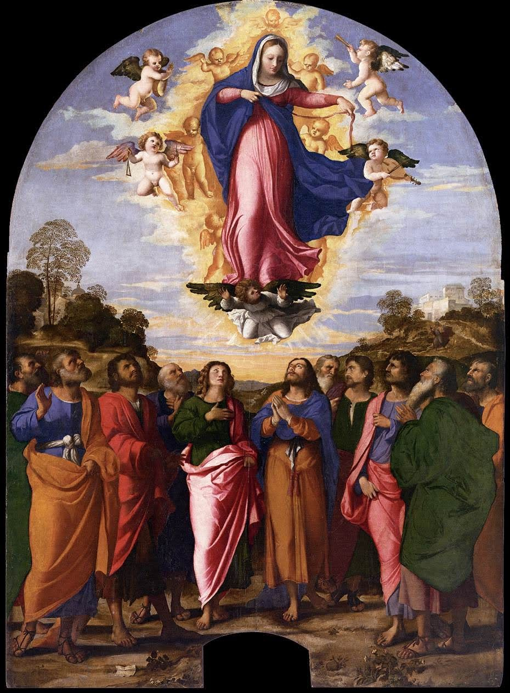
تكليل العذراء: تكريم العذراء
ثُمَّ ظَهَرَت آيَةٌ عَظيمَةٌ في السَّماء: إِمرَأَةٌ مُلتَحِفَةٌ بِالشَّمْس، والقَمَرُ تَحتَ قَدَمَيها، وعلى رَأسِها إِكْليلٌ مِنِ ٱثنَي عَشَرَ كَوكَبًا، (رؤيا 12: 1)

صلاة ختام المسبحة
السلام عليك يا سلطانة يا أم الرحمة، السلام عليك يا حياتنا و حلاوتنا و رجائنا، نصرخ اليك نحن المنفيين اولاد حواء، نتنهد اليك نائحين و باكين، في هذا الوادي وادي الدموع. فلذلك يا شفيعتنا، ميلي الينا بنظرك الحنون، و ارينا بعد هذا المنفى، يسوع، ثمرة بطنك المباركة، يا حنونة يا رؤوفة يا حلوة، يا مريم البتول.
صلي لأجلنا يا والدة الله القديسة لكي نستحق مواعيد المسيح، امين